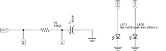
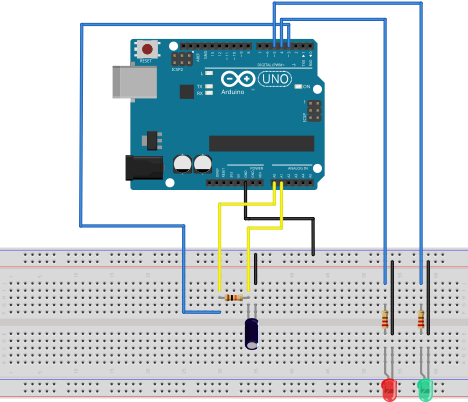

Célérité des ultrasons dans l'air.
La charge ou la décharge d'un condensateur à travers une résistance est un cas d'école pour illustrer
toutes les possibilité des mesures temporelle offertes par la biblothèque web-sciences.
Dans ce montage, c'est le programme qui déclenche la charge du condensateur en plaçant le pin 3 à l'état haut au début des mesures.


Les leds sont présentes uniquement dans un but de visualisation. Il est possible de les supprimer.
Deux versions du programme sont fournies :
Le programme:
charge ou decharge) sur
la liaison série et réagit en conséquence:charge, il place le pin 3 à l'état haut et effectue
la série de mesure. Chaque mesure est envoyée sur la liaison série juste après sa réalisation. la série se termine par l'envoi du mot end.decharge, il place le pin 3 à l'état bas et effectue la
série de mesures comme précédement.Le programme javascript à utiliser est le suivant :
mode = "temporel";
var commandes = [{texte_bouton:"Charge", arduino:"charge"},
{texte_bouton:"Décharge", arduino:"decharge"}];
var series = [{grandeur: "Uc", unite: "V"}, {grandeur: "E", unite: "V"}];
var titre_graphe = "Circuit RC";
var axes = [{grandeur: "t", unite: "ms"}, {grandeur: "U", unite: "V"}];
Le code complet à insérer dans une cellule Jupyter
from IPython.display import HTML, display
from web_sciences import get_interface
my_init = '''
mode = "temporel";
var commandes = [{texte_bouton:"Charge", arduino:"charge"},
{texte_bouton:"Décharge", arduino:"decharge"}];
var series = [{grandeur: "Uc", unite: "V"}, {grandeur: "E", unite: "V"}];
var titre_graphe = "Circuit RC";
var axes = [{grandeur: "t", unite: "ms"}, {grandeur: "U", unite: "V"}];
'''
S = get_interface(my_init)
display(HTML(S))
Ce code :
charge ou decharge ou sur la liaison série.ici images
ici vidéo youtube
lien vers Binder lien vers capytale liens vers fichier arduino
Le notebook circuit_rc_traitement.ipynb propose un exemple d'utilisation d'un fichier de mesures dans le but de déterminer la constante de temps d'un circuit RC.
Célérité des ultrasons dans l'air.

Circuit RC à tension constante.

Vérification de la loi de Mariotte.
Le module web_sciences a été écrit par un enseignant Français passionné d'informatique qui enseigne la physique en lycée depuis plus de 40 ans et NSI depuis sa création.